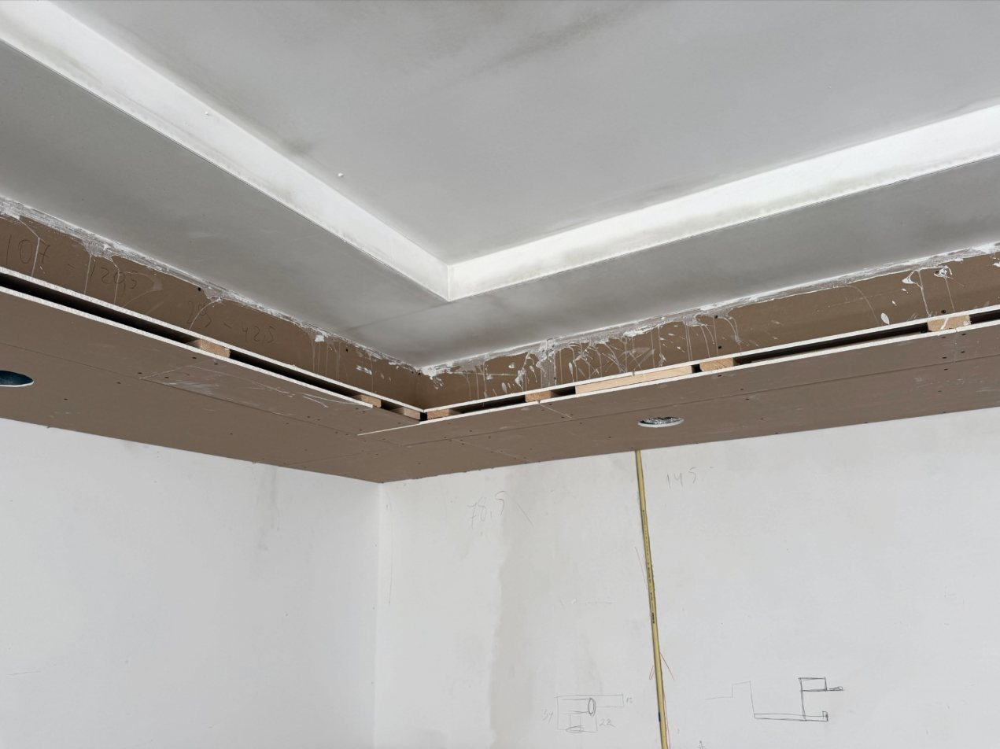
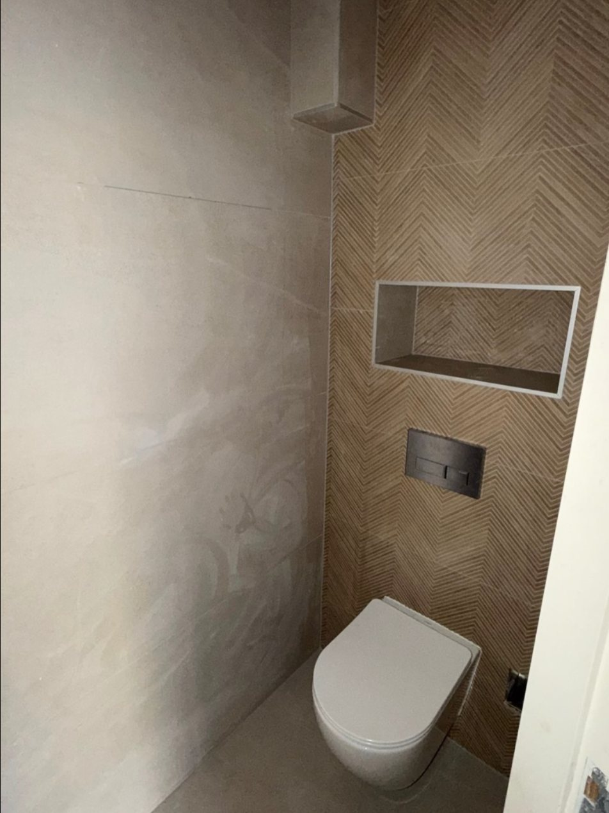
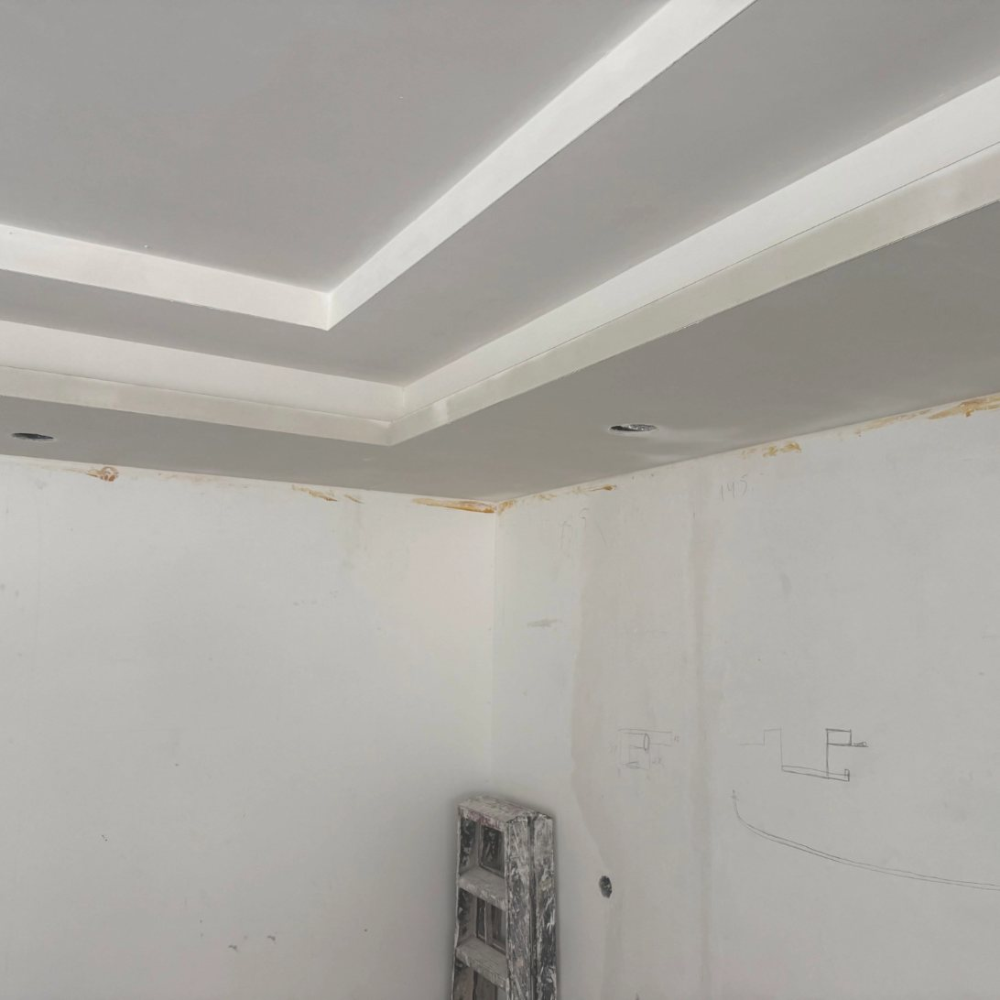
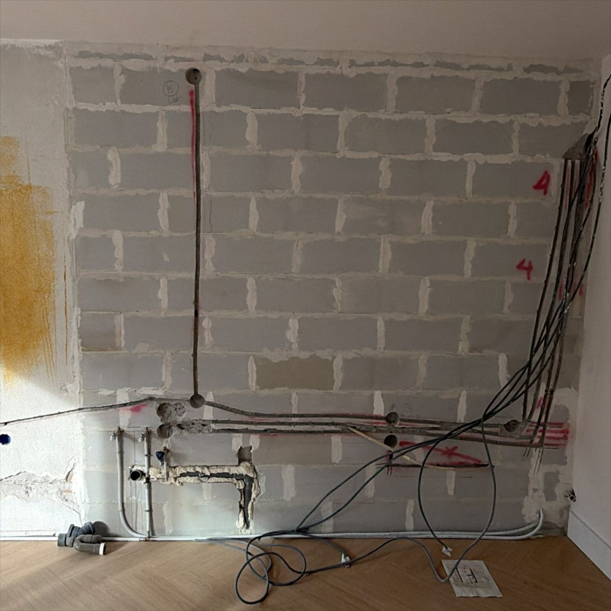
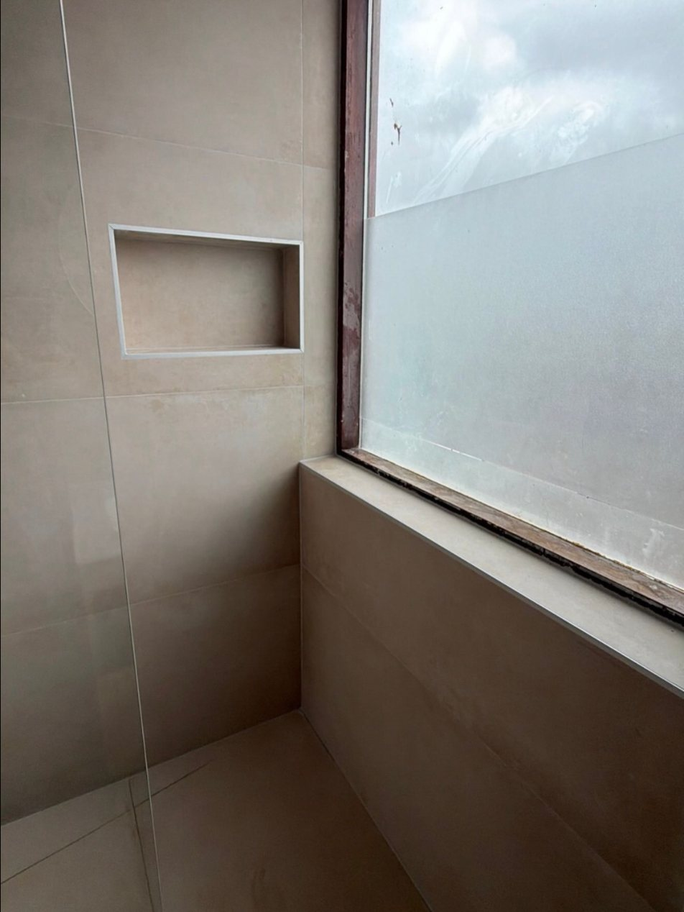

Totaal renovatie, project ontwikkeling en badkamers. Eén bedrijf dat de klus van begin tot eind aanpakt.
HT Klussenbedrijf pakt verbouwingen aan van sloopwerk tot en met de afwerking. Elektra, waterleiding, stucwerk, plafonds, vloeren en tegelwerk: wat er in een woning gebeurt, komt samen bij één bedrijf.
Op Instagram laten ze met voor- en na-foto’s zien hoe een ruimte verandert. Op deze site staat dat werk centraal.
Alle diensten
Sloopwerk, elektra, waterleiding, stucwerk, plafonds en vloeren, netjes op elkaar afgestemd.
Bekijk 02Van tekening tot uitvoering: een plan dat daadwerkelijk gebouwd wordt, tot het laatste likje verf.
Bekijk 03Badkamers en toiletten met strak tegelwerk, inbouwnissen en een afwerking die klopt.
BekijkVan sloop tot afwerking: de hele klus op één plek.

Verlaagd plafond met spotjes
Nieuwe muur, nieuwe leidingen
Douchenis in grootformaat tegelsJe vertelt wat je wilt, het liefst met foto’s of een schets.
Samen werk je de klus uit, van tekening tot planning.
Slopen, installeren, stucen en tegelen: de onderdelen sluiten op elkaar aan.
Het laatste likje, zodat je ruimte klaar is om in te wonen.
Voorbeeld van een werkwijze. De echte werkwijze van HT Klussenbedrijf kan hiervan afwijken en wordt door hen aangevuld.
Stuur een bericht en vertel wat je wilt laten doen. Foto’s helpen om het snel te kunnen beoordelen.